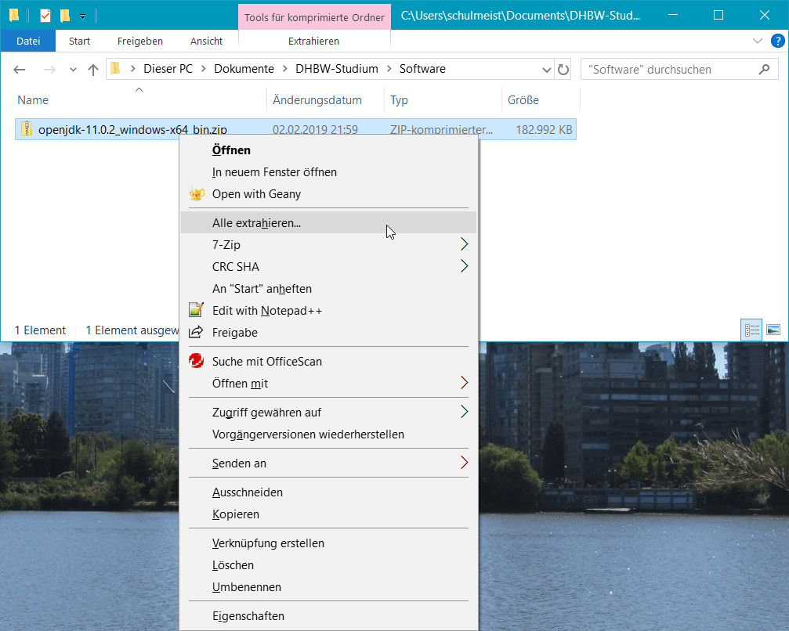
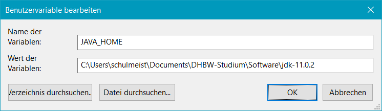
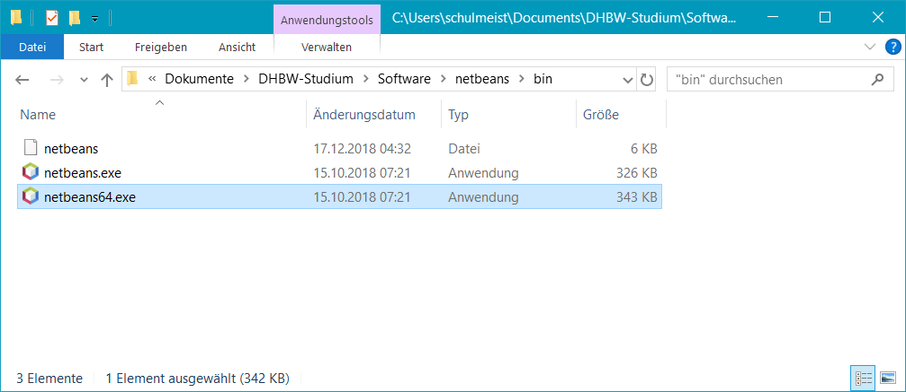
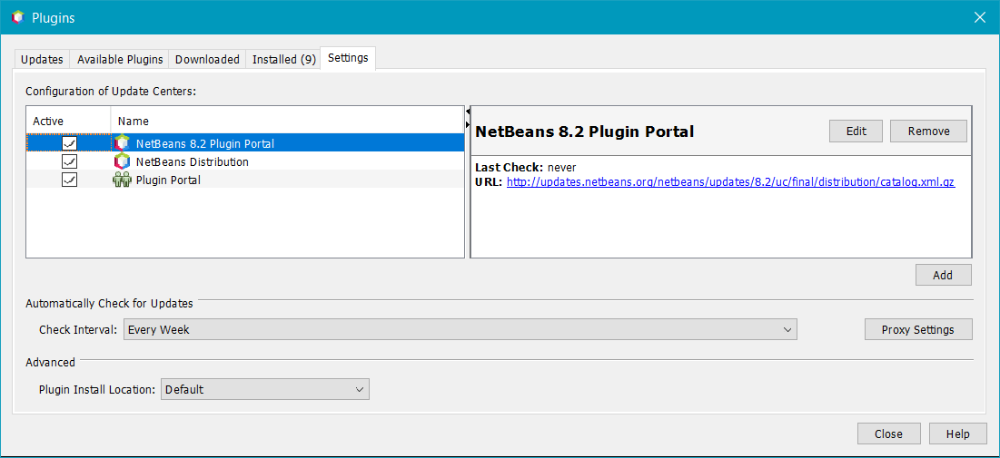

Im vierten Semester beschäftigen wir uns hauptsächlich mit der Backend-Entwicklung
und verteilten Microservice-Architekturen. Diese werden wir in Java programmieren,
wofür wir natürlich entsprechende Entwicklungswerkzeuge benötigen. Folgende
Programme solltest du daher auf deinem Rechner installieren:
Java Development Kit
Eine Java IDE nach Wahl
Maven (falls nicht in der IDE enthalten)
Postman (zum Testen von Webservices)
Die Programme haben dabei folgende Funktion:
Java Development Kit
Für die Programmierung werden wir dieses Semester voll auf Java setzen. Du
benötigst daher eine aktuelle Version des Java Development Kit als Compiler
und Laufzeitumgebung.
Apache NetBeans
Wie bei den meisten anderen Programmiersprachen reicht im Grunde genommen ein
einfacher Texteditor bereits aus, um Java-Quellcodes zu schreiben und zu bearbeiten.
Üblicherweise würde man aber trotzdem eine vollwertige Entwicklungsumgebung nutzen.
Welche IDE du bevorzugst, bleibt dir überlassen, solange du damit Maven-Projekte
bearbeiten und ausführen kannst. Mit Eclipse, NetBeans oder IntelliJ kannst du
deshalb nichts falsch machen.
Apache Maven
Maven ist in der NetBeans-Installation bereits enthalten, kann aber auch als eigenständiges
Programm installiert werden. Es vereinfacht nicht nur die Kompilierung, sondern greift im
Hintergrund auch auf ein großes Repository an Java-Bibliotheken zu, die wir in unseren
Anwendungen verwenden können.
Postman
Gleich am Anfang der Vorlesung werden wir unsere eigenen REST-Webservices
programmieren, um somit eine Schnittstelle zwischen Frontend und Backend
zu definieren. Um die Fehlersuche zu vereinfachen, werden wir die Webservices
dabei erst mit Postman testen, bevor wir sie im Frontend verwenden.
Hinweis: Diese Anleitung beschriebt die Installation der offizielen
OpenJDK-Version unter Windows. Da das OpenJDK kein Installationsprogramm
für Windows pflegt, müssen die Installationsdateien manuell auf dem Computer
entpackt werden und anschließend die Umgebungsvariablen des Betriebssystems
angepasst werden. Etwas einfacher könnte daher die Verwendung des OpenJDK-Forks
SAPMachine sein,
der ein Installationsprogramm besitzt.
1)
Besuche die Webseite https://jdk.java.net
und lade die passende Version für dein Betriebssystem herunter.
Download des Java Development Kit
2)
Unter Windows heißt die ZIP-Datei openjdk-11.0.2_windows-x64_bin.zip,
wobei 11.0.2 die Versionsnummer ist und daher bei dir abweichen kann.
Entpacke die Datei in das Softwareverzeichnis für unsere Vorlesung.

Entpacken des Java Development Kit
3)
Öffne das neue Verzeichnis und kopiere den Pfad in die Zwischenablage. Achte dabei darauf,
dass es sich um das Verzeichnis handelt, indem sich die Unterverzeichnisse bin,
conf, include usw. befinden.
Kopieren des Pfads, in dem sich das Java Development Kit befindet
4)
Öffne das Startmenü und suche dort nach dem Begriff „Umgebungsvariablen”. In der Suche sollte
daraufhin der Menüpunkt Umgebungsvariablen für dieses Konto bearbeiten
erscheinen. Klicke ihn an.
Öffnen des Konfigurationsfensters für Umgebungsvariablen
5)
Klicke im oberen Bereich des Fensters auf Neu…, um eine neue Variable
mit dem Namen JAVA_HOME anzulegen. Der Wert der Variable muss dem eben
kopierten Pfad entsprechen.

Anlage einer neuen Umgebungsvariable namens JAVA_HOME
6)
Anschließend bearbeite die Umgebungsvariable Path und füge dort denselben
Pfad gefolgt von \bin ein.
Bearbeiten der Umgebungsvariable Path
7)
Zum Testen der Installation benötigen wir wieder eine Kommandozeile. Öffne deshalb das Startmenü
und gebe dort den Befehl cmd ein.
Start der Kommandozeile unter Windows
Gib dann den Befehl javac -version ein und bestätige ihn mit ENTER.
Wenn alles gut geht, sollte die installierte Java-Version erscheinen.
Versionsanzeige des Java-Compilers
Hinweis: An dieser Stelle zeigen wir exemplarisch die Installation
von NetBeans zusammen mit Maven. Wie gesagt, kannst du aber auch jede andere
Java IDE verwenden.
1)
Besuche die Webseite https://netbeans.apache.org
und lade das Binärpaket (nicht die Quellcode-Version) herunter.
Download von NetBeans
2)
Das ZIP-Archiv heißt incubating-netbeans-java-10.0-bin.zip,
wobei 10.0 die Versionsnummer ist und daher bei dir abweichen kann.
Entpacke die Datei in das Softwareverzeichnis für unsere Vorlesung.
Entpacken von NetBeans
3)
Wechsle in das Unterverzeichnis netbeans\bin und versuche, NetBeans
per Doppelklick auf netbeans64.exe zu starten. Unter macOS und Linux
musst du stattdessen die Datei netbeans ohne eigene Dateiendung ausführen.

EXE-Datei zum Starten von NetBeans unter Windows
4)
Falls nach einer kurzen Weile die folgende Warnung erscheint, klicke auf
Disable Modules and Continue.
Warnung wegen einem fehlenden Modul
5)
Wenn du willst, kannst du beim ersten Start der Sendung anonymisierter Nutzungsdaten zur
Verbesserung von NetBeans zustimmen.
Frage nach der Zustimmung zur Auswertung anonymisierter Nutzungsdaten
6)
Links sollten drei Tabreiter namens Projects, Files
und Services erscheinen. Falls nicht, öffne Sie über das Window-Menü.
Mit den drei Tabreitern Projects, Files
und Services werden wir häufig arbeiten
7)
Dieser Schritt entfällt ab NetBeans 11 und wird nur für NetBeans 9 oder 10 benötigt. In diesen Versionen bietet NetBeans
zwar schon viele Funktion. Es fehlen allerdings noch die Erweiterungen für Jakarta EE, die wir erst in Form weiterer Plugins
nachinstallieren müssen. Wähle hierfür den Menüeintrag Tools → Plugins aus,
wechsele dort auf den Reiter Settings und setze das fehlende Häkchen bei
NetBeans 8.2 Plugin Portal.

Aktivierung des zusätzlichen Plugin-Repositories für Jakarta EE
Anschließend wechsle auf den Reiter Available Plugins und klicke dort auf
Check for Newest, um die Liste der verfügbaren Plugins zu aktualisieren.
Danach installiere die folgenden Plugins:
SOAP Web Services
EJB and EAR
RESTful Web Services
Java EE Base
Oracle JS Parser Implementation
Auswahl der zu installierenden Plugins
Eine kurze Weile später will NetBeans dann neugestartet werden. Bestätige die Frage und warte,
bis NetBeans wieder verfügbar ist.
8)
Die Rechtschreibprüfung von NetBeans kennt leider nur Englisch, die Beispiele und Aufgaben in
Moodle sind aber alle auf deutsch kommentiert. Auf Moodle haben wir deshalb ein deutsches Wörterbuch
hochgeladen, dass du herunterladen kannst.
Download des deutschen Wörterbuchs
9)
Entpacke das ZIP-Archiv in das Softwareverzeichnis für unsere Vorlesung.
Entpacken des deutschen Wörterbuchs
10)
Wähle in NetBeans den Menüeintrag Tools → Options
aus und wechsle dort auf die Seite Editor → Spellchecker.
Klicke dort auf Add…, um ein neues Wörterbuch hinzuzufügen. Gib dabei folgende
Werte ein:
Dictionary File:german.dic aus dem eben entpackten ZIP-Archiv
Dictionary Locale:de
Hinzufügen des deutschen Wörterbuchs
11)
Zum Schluss wollen wir noch sichergehen, dass du maven-basierte Webprojekte in NetBeans erstellen kannst.
Wähle hierfür im Menü den Eintrag Tools → Options aus
und öffne dann die Seite Java → Maven. Es dauert dann
eine Weile, bis sich das Fenster kurz schließt und wieder öffnet und dadurch Maven aktiviert wurde.
Du kannst das Fenster danach gleich mit OK wieder schließen.
Zum Test, ob Maven nun vollständig eingerichtet wurde, gehe auf File → New Project…
und prüfe, ob in der Kategorie Maven der Eintrag Web Application erscheint.
Eventuell taucht der Eintrag dabei nicht von Anfang an auf, nach einer Weile sollte er aber irgendwann hier zur Verfügung stehen.
Wenn es so aussieht, ist alles in Ordnung.
1) Besuche die Webseite
postman.com/downloads/
und lade die Installationsdatei von Postman herunter.
Download von Postman
2) Unter Windows heißt die Installationsdatei Postman-win64-8.0.4-Setup.exe,
wobei die Versionsnummer auch eine andere sein kann. Die Installation läuft komplett automatisch ab.
Installation von Postman
3) Das war's auch schon. Nach Abschluss der Installation öffnet sich Postman von selbst.
Das Fenster kann einfach geschlossen werden.